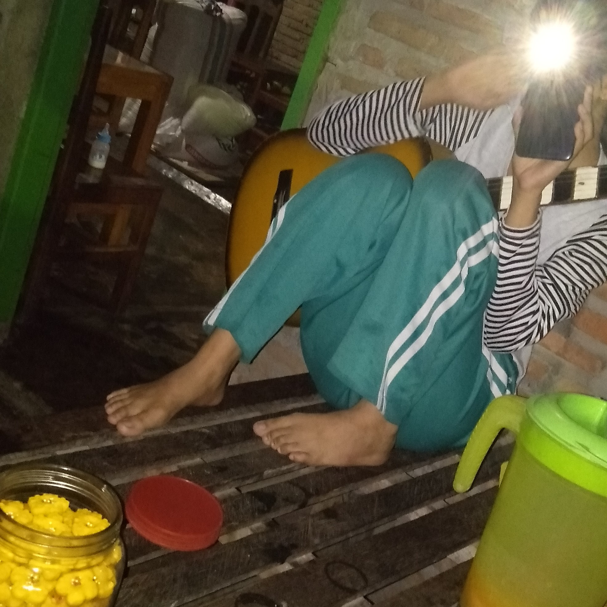

Kuharap Egkau Membacanya Walaupun Dalam Hati
Cinta dan benci adalah emosi jiwa yang bersifat dinamis, sangat mudah berubah dari suatu waktu ke waktu yang lain. Oleh karenanya, apabila engkau mengagumi seseorang, janganlah memujinya dengan cara yang berlebihan, karena boleh jadi orang yang paling kamu kagumi saat ini akan berubah menjadi orang yang kamu benci suatu saat kelak. Sebaliknya apabila engkau membenci seseorang, janganlah berlebihan dalam mencercanya. Boleh jadi orang yang paling kamu benci saat ini, akan menjadi orang yang paling kamu kagumi suatu saat kelak. Cinta dan benci adalah emosi jiwa yang bersifat dinamis, sangat mudah berubah dari suatu waktu ke waktu yang lain. Oleh karenanya, apabila engkau mengagumi seseorang, janganlah memujinya dengan cara yang berlebihan, karena boleh jadi orang yang paling kamu kagumi saat ini akan berubah menjadi orang yang kamu benci suatu saat kelak. Sebaliknya apabila engkau membenci seseorang, janganlah berlebihan dalam mencercanya. Boleh jadi orang yang paling kamu benci saat ini, akan menjadi orang yang paling kamu kagumi suatu saat kelak.